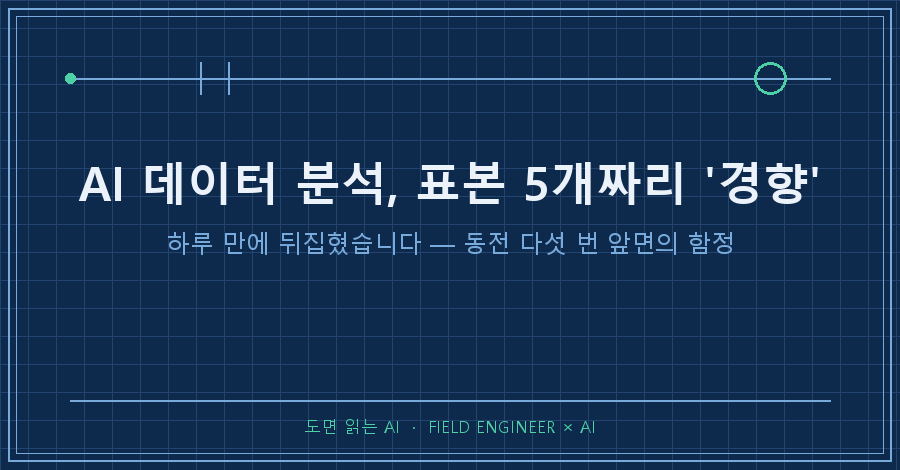
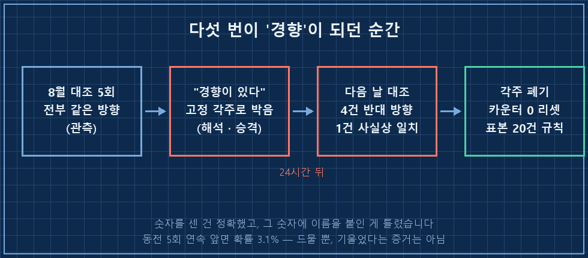
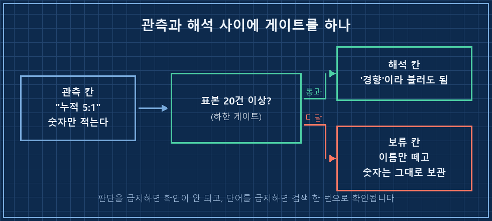

먼저 결론부터 적을게요.
AI 데이터 분석에서 제일 위험한 단어는 "경향이 있습니다"입니다. 다섯 번 같은 방향이 나왔다고 경향이라고 이름 붙이면, 그다음 날 정반대가 나옵니다. 어제 제가 그걸 그대로 당했어요.
2026년 8월 기준이고, 매일 새벽에 혼자 돌아가는 개인 브리핑 자동화에서 벌어진 일입니다. 도구가 뭐든 AI한테 같은 항목을 매일 기록하고 대조시키는 구조라면 그대로 적용돼요.
저는 계측값 보고 합격인지 불합격인지 판정하는 일을 십오 년쯤 해왔습니다.
그 바닥에서 배운 게 하나 있다면, 데이터 다섯 개로 판정 기준을 손대면 그 라인은 반드시 사고가 난다는 거예요.
제 개인 자동화에서는 그 원칙을 안 지키고 있었습니다..
1. 다섯 번 연속 같은 방향으로 틀렸습니다
이 자동화는 새벽에 돌면서 지표 몇 개를 받아 적습니다.
그 시각엔 아직 값이 확정 전이라 중간값이에요. 그래서 다음 날 확정값이 나오면 전날 적은 값과 하나씩 맞춰보는 절차를 붙여놨습니다.
8월 내내 그 대조에서 같은 방향이 나왔어요.
8/26 장중치 대조: 지수 5건이 전부 같은 방향(실제가 더 나쁨)으로 틀렸습니다.
8월 들어 '위험을 온순하게 적은' 방향 오류 5번째입니다.다섯 번이면 우연은 아니라고 봤죠.
그래서 AI가 이유까지 붙여 정리했습니다. 마감 직전 한 시간에 쏠림이 있으니, 그 전에 받아 적은 중간값은 실제보다 밝게 나온다고요.
그리고 이걸 매일 자동으로 붙는 고정 각주로 박았습니다.
여기까지는 꽤 그럴듯했어요. 다섯 번 다 맞은 설명이었으니까요.
2. 그런데 다음 날 네 건이 반대로 나왔어요
바로 다음 날 대조 결과가 이겁니다.
8/27 대조 결과 지수 4건이 반대 방향(실제가 더 좋음), 1건 사실상 일치.
8월 온순 방향 오류 5연속은 오늘 끊겼습니다.하루 만에 뒤집혔어요..
"이제 이 규칙으로 갑니다" 하고 각주까지 박은 게 스물네 시간을 못 버틴 겁니다.

3. 동전을 다섯 번 던져 앞면이 다섯 번
AI가 원인을 스스로 이렇게 적었습니다.
원인 진단: 표본 5건으로 '경향'을 선언한 것 자체가 성급했습니다
(동전 5회 연속 앞면 확률 3.1% — 드물지만 편향의 증거는 아님)이 한 줄이 이 글의 전부예요.
동전을 다섯 번 던져 앞면이 다섯 번 나올 확률은 3.1%입니다. 백 번 중 세 번쯤은 그냥 일어나요. 드물긴 한데, 그게 동전이 기울었다는 증거는 못 됩니다.
같은 문단에 이런 자평도 남아 있었어요.
"저는 '드문 일'을 '법칙'으로 승격시켰습니다."
AI 데이터 분석이 무너지는 지점이 정확히 여기예요.
숫자를 잘못 세서 틀리는 게 아니라, 제대로 센 숫자에 이름을 너무 빨리 붙여서 틀립니다. 다섯 개를 다섯 개라고 적는 일은 아주 잘해요. 그 다섯 개를 "경향"이라고 부르는 순간부터 문제가 되는 거고요.
더 곤란한 건 그다음입니다. 한 번 경향이 되면 각주로, 요약으로, 다음 날 판단의 전제로 계속 복제돼요. 원본 한 줄을 고쳐도 이미 퍼진 문장은 어제 결론을 그대로 말합니다.
4. 그래서 규칙을 세 줄로 박았습니다
조치는 세 줄이었습니다.
① 각주 문구를 「양방향으로 벌어질 수 있으며, 8월 누적 방향은 5:1」로 수정
② 방향 연속 카운터 0으로 리셋
③ 표본 20건 미만에서는 '경향'이라는 단어를 쓰지 않는다 — 방법론에 추가세 줄이 각각 다른 일을 합니다.
①은 이미 퍼져버린 문장을 되돌리는 자리예요. 해석("밝게 나온다")을 걷어내고 관측("5:1")만 남겼습니다. 숫자는 그대로 두고 이름표만 뗀 거죠.
②는 카운터를 0에서 다시 세게 만든 겁니다. 연속 기록은 깨진 그날 리셋해야 하는데, 리셋 조건을 안 정해두면 AI는 "그래도 누적은 5:1이잖아요" 하면서 계속 끌고 가더라고요..
③이 진짜 조치입니다. 표본 20건을 넘기기 전에는 '경향'이라는 단어 자체를 금지했어요.
판단을 금지하는 건 안 먹히거든요. "성급하게 결론 내지 마세요"는 지켜졌는지 확인할 방법이 없습니다. 반면 "표본 20건 미만에서 '경향'이라고 쓰지 마"는 다음 날 산출물에서 검색 한 번이면 판정이 끝나요.
지킬 수 있는 규칙은 결국 셀 수 있는 규칙이더라고요.

5. 다음 날 이렇게 나오면 규칙이 먹은 겁니다
확인 방법은 단순합니다. 그날 산출물에서 금지어를 찾으면 돼요.
findstr /C:"경향" /C:"추세" 산출물파일걸린 문장마다 이 순서로 판정합니다.
| 걸린 문장 상태 | 판정 | 조치 |
|---|---|---|
| 표본 수가 안 적혀 있다 | 위반 | 관측 문장으로 되돌림 |
| 표본 수가 있는데 20 미만 | 위반 | 숫자만 남기고 이름 삭제 |
| "누적 5:1" 처럼 숫자만 있다 | 통과 | 그대로 둠 |
| 규칙 위반을 설명하는 자리 | 통과 | 그대로 둠 |
저는 정정 당일 산출물을 이렇게 훑어봤는데 '경향'이 여덟 군데 나왔어요.
전부 "왜 그 단어를 쓰면 안 되는지" 설명하는 자리였고, 새로 선언된 경향은 0건이었습니다. 규칙이 하루는 버틴 셈이죠.
자주 나오는 반문 세 가지
표본 20건은 어디서 나온 숫자인가요?
통계적으로 유도한 값이 아닙니다. 하루 한 건씩 쌓이는 데이터라 20건이면 대략 한 달이고, 한 달은 지나야 한쪽으로 쏠린 시기가 섞인다는 실무 감각으로 잡은 하한이에요. 근거가 감각이라는 걸 같이 적어두는 게 중요하지, 20이라는 숫자가 신성한 건 아닙니다.
그럼 다섯 건은 버리는 건가요?
버리는 건 '경향'이라는 이름이지 데이터가 아니에요. "8월 누적 5:1"은 그대로 남겨둡니다. 나중에 스무 건이 모였을 때 판단할 재료가 되니까요. 이름만 떼고 숫자는 보관, 이게 핵심입니다.
AI가 스스로 잘못을 찾았으면 그냥 둬도 되지 않나요?
이번엔 다음 날 대조 절차가 있어서 걸린 겁니다. 그 절차가 없었으면 틀린 각주가 몇 달은 그대로 붙어 다녔을 거예요. 자기 오류를 찾은 건 AI가 아니라 대조라는 절차입니다. 어제 결론을 오늘 데이터로 다시 때려보는 자리, 그거 하나는 꼭 만들어두세요!
숫자를 세는 일은 AI가 저보다 훨씬 빠릅니다.
다만 그 숫자에 이름을 붙일지 말지 정하는 자리, 거기 하나만 제가 지키면 되더라고요.
여러분의 AI는 몇 개를 보고 "경향이 있습니다"라고 말하던가요?
이런 식으로 하나씩 늘어난 금지어 목록은 makefield.ai에 정리해 올리고 있습니다.